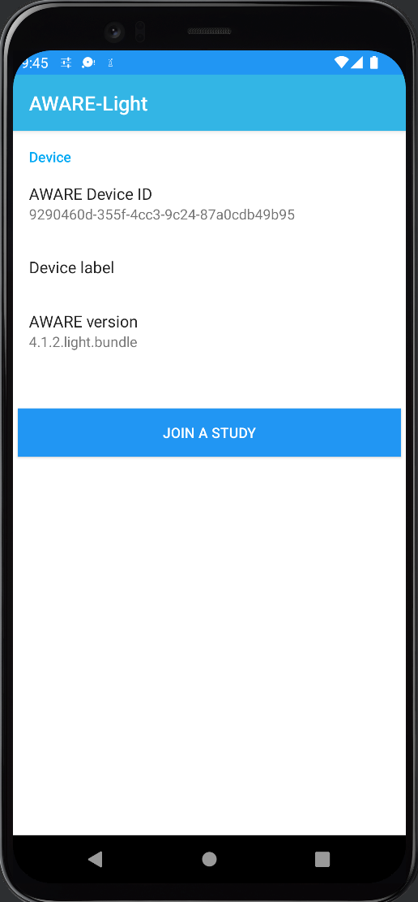
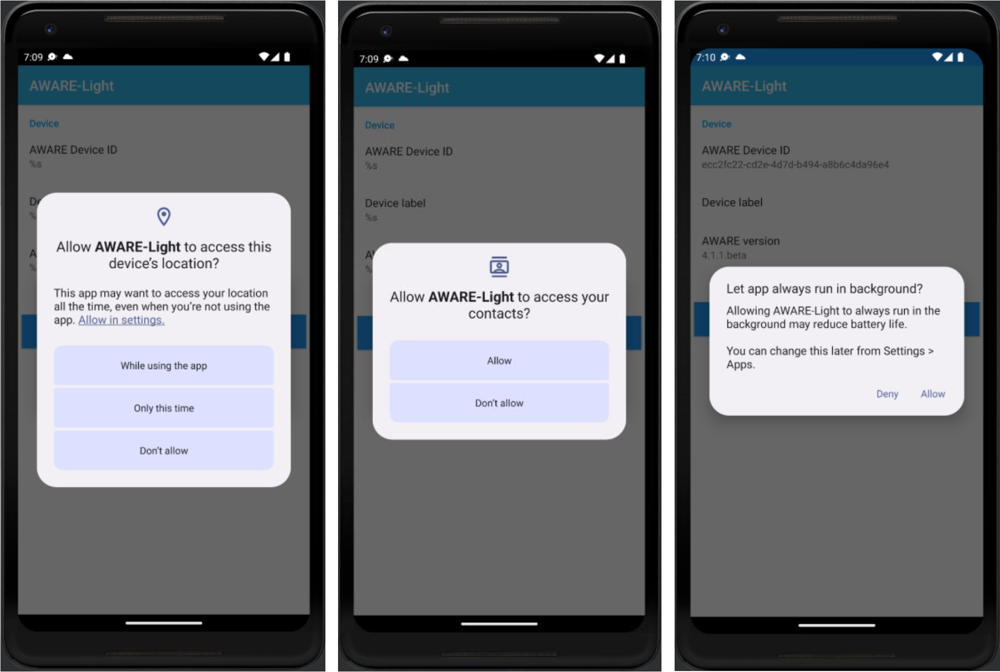
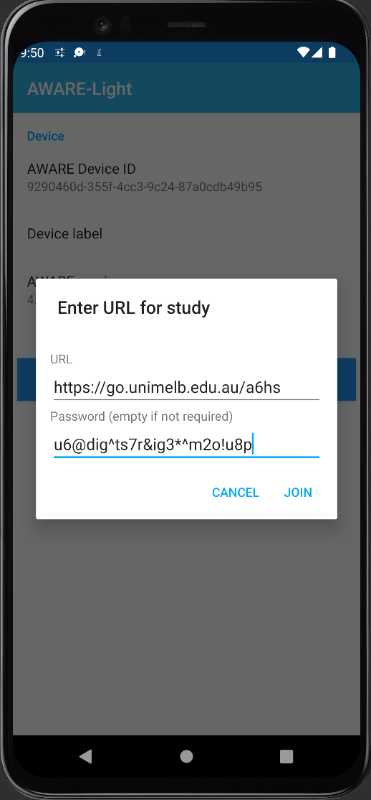
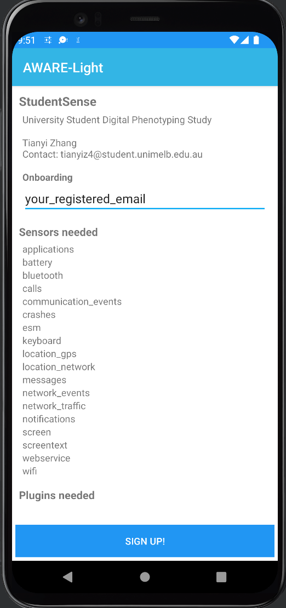
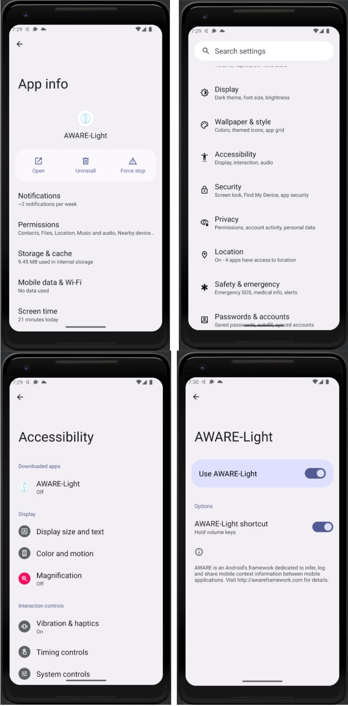
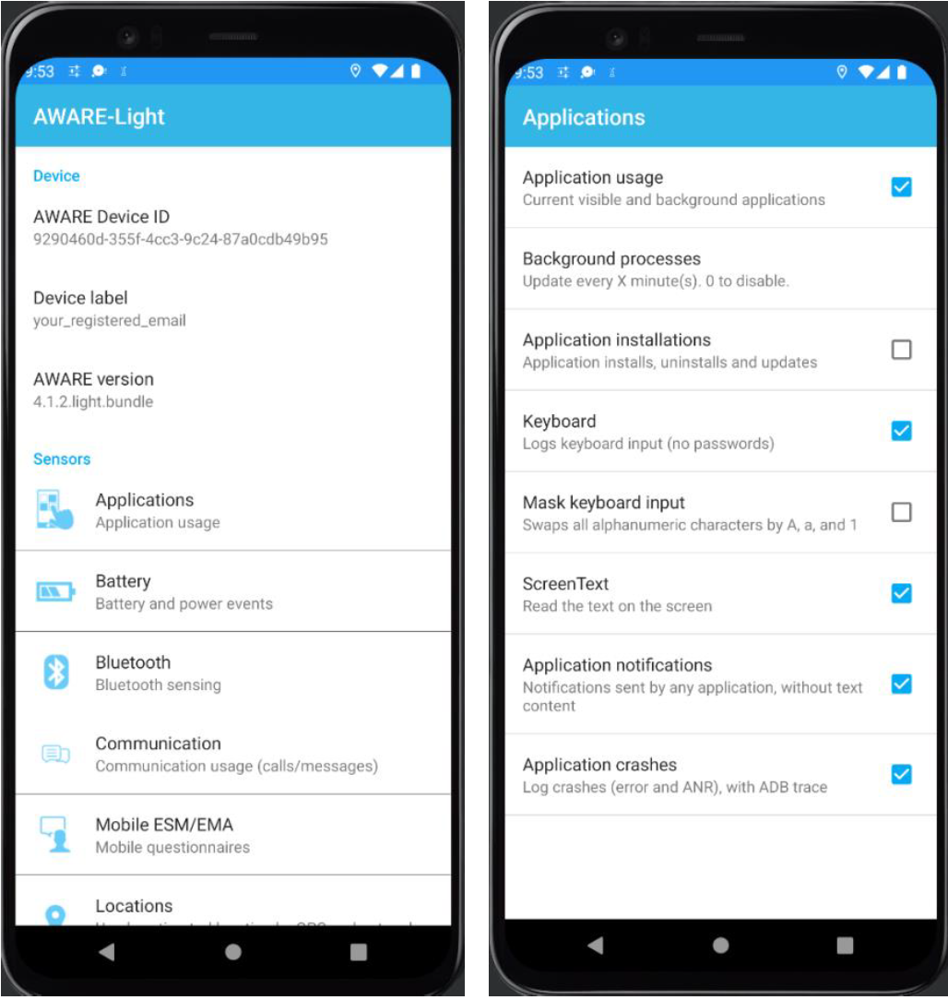

StudentSense Study
Hello! Thank you for participating in the StudentSense study! Please follow the steps below to join the StudentSense study. If you have any questions, please email our researcher, Tianyi Zhang, at tianyiz4@student.unimelb.edu.au.
Set-up steps
- If you have previously installed AWARE-Light during the test phase or for another study, please uninstall the application.
- Download and install AWARE-Light by clicking here. Please allow a minute for the app to adapt to your phone during installation.
- Grant all necessary permissions by pressing “Allow” to AWARE for accessing sensors.
- Tap on "JOIN A STUDY" and enter the study URL and password:
- https://go.unimelb.edu.au/a6hs

- Password: u6@dig^ts7r&ig3*^m2o!u8p
- https://go.unimelb.edu.au/a6hs
- Enter your registered email> and tap on "SIGN UP"
-
Open Settings → select "Accessibility" → turn accessibility on for AWARE-Light. If you encounter any issues in this step, here is a demonstration video that may help: Watch Video. You may also apply these useful steps:
- On your Android device, open the Settings app.
- Tap Apps.
- Tap the app that you want to turn on a restricted setting for. Tip: If you can't find it, first tap See all apps or App info.
- Tap More and then Allow restricted settings.
- Follow the on-screen instructions.
- Capture a screenshot of your AWARE device ID and email it to Tianyi at tianyiz4@student.unimelb.edu.au. If you ever uninstall and reinstall the app, please remember to promptly send the screenshot of the AWARE device ID to Tianyi.
Figure 1. Installation of AWARE-Light

Figure 2. Examples of granting permissions

Figure 3. Join study - link and password can be found in Tianyi's email

Figure 4. Enter registered email

Figure 5. Turn accessibility on for AWARE-Light

Information about the study that might be of interest to you
Turning on/off sensors
To turn on or off data collection from certain sensors, you may adjust through AWARE-Light panel as shown in Figure 6:
Figure 6. Turning on/off sensors

Text collected applications
Textual information will also be collected for certain apps. Specifically, the app will record the textual information from the following apps:
- Chrome
- Firefox
- News & Magazines (category)
- Books & Reference (category)